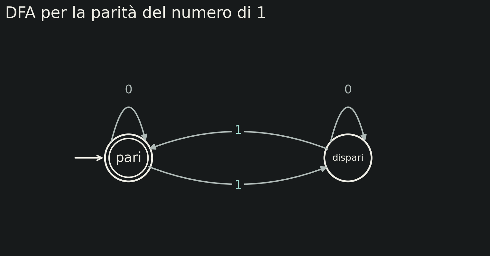
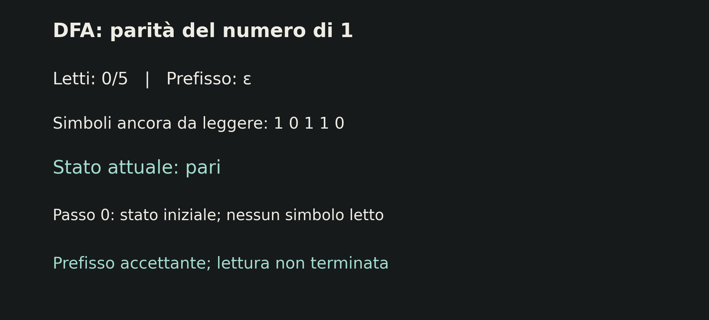
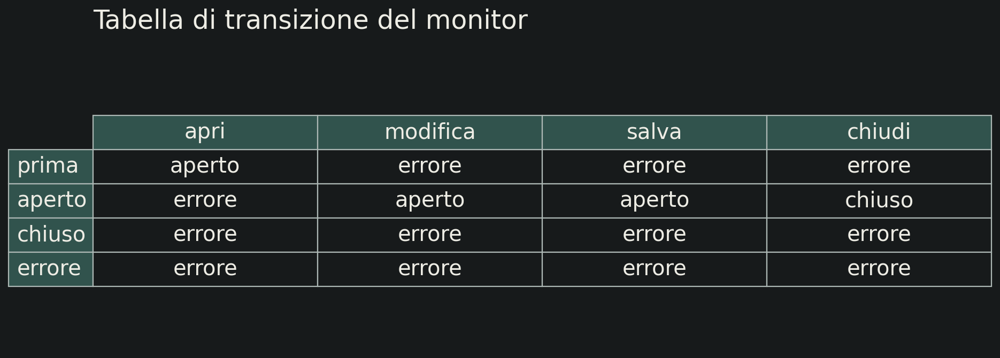
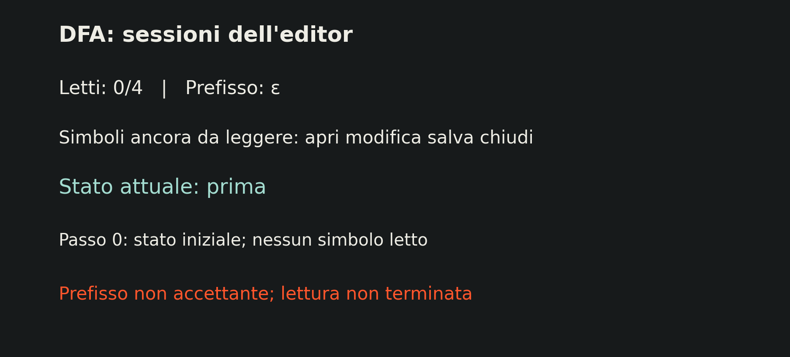
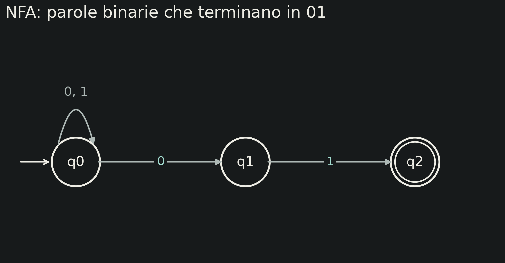
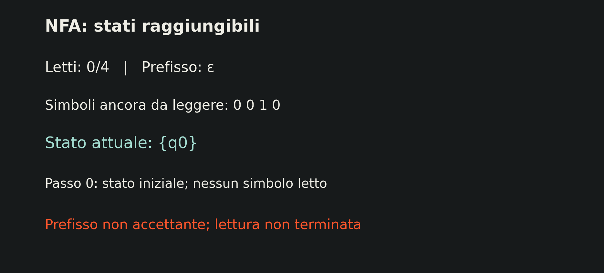
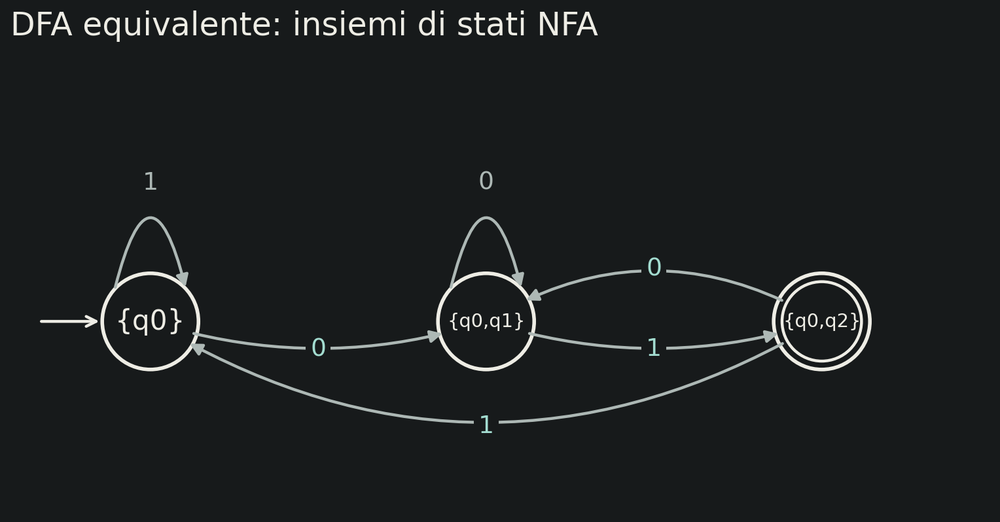

01 / 31 · pp. 9-10
Una sequenza di eventi descrive un comportamento. Un automa decide se quella sequenza soddisfa una proprietà.
Percorso: parole e linguaggi → DFA → NFA → costruzione per sottoinsiemi.
Obiettivo: simulare un automa e spiegare perché DFA e NFA riconoscono gli stessi linguaggi su parole finite.
02 / 31 · §1.1, pp. 10-11
Un alfabeto è un insieme finito non vuoto di simboli.
Una parola è una sequenza finita di simboli dell’alfabeto.
\[ A=\{0,1\},\qquad w=0101,\qquad |w|=4 \]
La parola vuota \(\varepsilon\) ha lunghezza zero. Un evento come apri può essere un unico simbolo: non va confuso con i suoi caratteri.
03 / 31 · §1.1, p. 11
\[ L\subseteq A^* \]
L’alfabeto stabilisce cosa possiamo scrivere. Il linguaggio stabilisce quali parole soddisfano la proprietà scelta.
Esempio: parole binarie che terminano con 01.
01, 101, 0001 appartengono al linguaggio; ε, 10, 011 no.
04 / 31 · §1.1, p. 11
\[ u=01,\quad v=1,\qquad uv=011,\quad vu=101 \]
\[ |uv|=|u|+|v|,\qquad \varepsilon w=w\varepsilon=w \]
Per due linguaggi, \(L_1L_2\) contiene le concatenazioni di una parola del primo con una del secondo.
Da distinguere: \(L\{\varepsilon\}=L\), mentre \(L\varnothing=\varnothing\).
05 / 31 · §1.1, p. 12
\[ W^0=\{\varepsilon\},\qquad W^*=\bigcup_{n\geq0}W^n \]
\(W^*\) permette zero o più blocchi; \(W^+\) richiede almeno un blocco.
Per \(W=\{01\}\): ε, 01, 0101, … appartengono a \(W^*\).
Attenzione: se \(\varepsilon\in W\), anche \(W^+\) contiene \(\varepsilon\). Un blocco non è necessariamente non vuoto.
06 / 31 · §1.2, p. 12
Per sapere se il numero di 1 è pari, non serve memorizzare la parola né il conteggio esatto.
Bastano due situazioni:
pari: finora un numero pari di 1;dispari: finora un numero dispari di 1.Leggere 1 cambia la parità; leggere 0 la conserva.
07 / 31 · §1.2, p. 13
\[ \mathcal A=(Q,A,\delta,q_0,F) \]
Lo stato iniziale non deve essere necessariamente accettante.
08 / 31 · §1.2, pp. 12-13
La freccia esterna indica lo stato iniziale. Il doppio cerchio indica uno stato accettante.
Per ogni stato devono esserci le transizioni per entrambi i simboli 0 e 1.

DFA per la parità — figura 1
09 / 31 · §1.2, p. 14
\[ \widehat\delta(q,\varepsilon)=q \]
\[ \widehat\delta(q,wx)=\delta(\widehat\delta(q,w),x) \]
Una parola di lunghezza \(n\) genera una run con \(n+1\) stati, contando quello iniziale.
La decisione riguarda lo stato dopo tutta la parola, non uno stato visitato a metà.
w="10110"
run=dfa_run(PARITY,0,w)
print("Parola:",w)
print("Run:"," → ".join("pari" if q==0 else "dispari" for q in run))
print("Accettata:",run[-1]==0)Parola: 10110
Run: pari → dispari → dispari → pari → dispari → dispari
Accettata: False10 / 31 · §1.2, pp. 12-14
Il modello riconosce le parole con un numero pari di 1.
10110.0 mostra lo stato iniziale.1, poi a 2: lo stato passa da dispari a dispari, perché il secondo simbolo è 0.5 la parola è completa: viene rifiutata.Cambiare parola riporta il cursore a zero.

Simulazione DFA — figura 1
11 / 31 · §1.2, p. 13
Consideriamo quattro eventi: apri, modifica, salva, chiudi.
Una sessione completata apre una volta, può modificare e salvare, poi chiude.
La memoria necessaria è la fase: prima, aperto, chiuso, errore.
Solo chiuso è accettante: un editor ancora aperto non è una sessione completata.
12 / 31 · §1.2, pp. 13-15
Ogni cella della tabella definisce il prossimo stato.
Da errore non si torna a una sessione valida. Anche un evento dopo chiudi porta a errore.

Tabella completa del monitor — figura 1
13 / 31 · §1.2, p. 13
Il modello controlla l’ordine degli eventi dell’editor.
apri chiudi salva.0 a 3: ogni passo consuma un evento intero.2 lo stato è chiuso: il prefisso è una sessione completata.3, salva porta a errore: la traccia completa è rifiutata.La riga Ultimo passo indica l’evento che ha cambiato lo stato.

Simulazione dell’editor — figura 1
14 / 31 · §1.2.1, pp. 14-15
Un DFA formale ha una funzione di transizione totale.
Per completare un disegno parziale, aggiungiamo uno stato non accettante \(\bot\).
Le transizioni mancanti vanno a \(\bot\); da \(\bot\) ogni simbolo ritorna a \(\bot\).
Non sostituire una freccia mancante con un autoanello: potresti cambiare il linguaggio.
15 / 31 · §1.2, pp. 13-14
Proprietà: ogni 0 deve avere almeno un 1 in una posizione successiva.
Un solo 1 può risolvere più 0 pendenti: 0001 va bene.
Basta ricordare nessun obbligo oppure obbligo pendente. Su 0 siamo pendenti; su 1 torniamo senza obblighi.
Questa proprietà non richiede di associare un 1 distinto a ogni 0.
16 / 31 · §1.3, pp. 15-16
\[ \mathcal N=(Q,A,\Delta,q_0,F) \]
Per una coppia stato-simbolo, \(\Delta(q,x)\) è un insieme di possibili successori: può avere zero, uno o più elementi.
\[ \Delta:Q\times A\to 2^Q \]
In questo capitolo consideriamo NFA senza transizioni \(\varepsilon\).
17 / 31 · §1.3, p. 17
Un NFA può continuare a leggere in q0 oppure, su 0, iniziare un tentativo in q1.
Da q1, un 1 porta a q2, accettante. Da q2 non partono transizioni.
Il tentativo riesce soltanto se la parola termina appena raggiunto q2.

NFA per il suffisso 01 — figura 1
18 / 31 · §1.3, pp. 16-17
\[ S_0=\{q_0\},\qquad S_{i+1}=\bigcup_{q\in S_i}\Delta(q,w_i) \]
Su 001, gli insiemi sono:
{q0} → {q0,q1} → {q0,q1} → {q0,q2}.
Se due rami raggiungono lo stesso stato, lo registriamo una sola volta.
{q0} → {q0, q1} → {q0, q1} → {q0, q2}19 / 31 · §1.3, pp. 16-17
Il modello riconosce le parole che terminano con 01.
0010 e porta Letti a 3.{q0,q2}: il prefisso 001 è accettante perché contiene q2.4: rimangono {q0,q1}. La parola completa è rifiutata.Le parentesi graffe elencano tutti gli stati raggiungibili, non un singolo ramo scelto.

Simulazione NFA — figura 1
20 / 31 · §1.3, p. 17
\[ w\in L(\mathcal N)\quad\Longleftrightarrow\quad S_{|w|}\cap F\neq\varnothing \]
Basta almeno uno stato finale nell’insieme raggiunto dopo tutta la parola.
Non è necessario che tutti i rami accettino. Alcuni possono morire o finire in stati non accettanti.
21 / 31 · §1.4, pp. 18-19
Nell’NFA del suffisso 01, dopo 00 sono possibili q0 e q1.
Il DFA li ricorda con un solo stato, chiamato {q0,q1}. Leggendo 1, da q0 si arriva a q0 e da q1 a q2: il nuovo stato del DFA è {q0,q2}.
In generale, uno stato del DFA è un insieme \(S\) di stati NFA. Su un simbolo \(x\), raccogliamo tutti i loro successori:
\[ \delta_D(S,x)=\bigcup_{q\in S}\Delta(q,x) \]
\[ Q_D=2^Q,\qquad q_{0,D}=\{q_0\} \]
22 / 31 · §1.4, pp. 18-20
Partiamo da {q0}. Per ogni insieme scoperto, calcoliamo il successore su 0 e su 1.
Accodiamo un insieme solo se è nuovo. Ci fermiamo quando non restano insiemi da esplorare.
Nel nostro esempio si raggiungono 3 insiemi, su un massimo teorico di 8.
for subset in sorted(SUBSETS,key=lambda s:(len(s),sorted(s))):
print(subset_name(subset), "| 0 →",subset_name(DET[(subset,"0")]),
"| 1 →",subset_name(DET[(subset,"1")]),"| finale:",subset in DET_FINAL)
print("Raggiungibili:",len(SUBSETS),"/ massimo:",2**3){q0} | 0 → {q0, q1} | 1 → {q0} | finale: False
{q0, q1} | 0 → {q0, q1} | 1 → {q0, q2} | finale: False
{q0, q2} | 0 → {q0, q1} | 1 → {q0} | finale: True
Raggiungibili: 3 / massimo: 823 / 31 · §1.4, pp. 18-20
I tre stati corrispondono a tre insiemi possibili.
È accettante l’insieme che contiene q2. Le frecce definiscono una funzione totale sul grafo raggiungibile.

Il DFA risultante — figura 1
24 / 31 · §1.4, pp. 19-20
Dopo 00, l’NFA può trovarsi in q0 oppure in q1; il DFA è nell’unico stato {q0,q1}.
Proprietà da dimostrare: dopo ogni parola \(w\), lo stato del DFA coincide con l’insieme di tutti gli stati raggiungibili nell’NFA:
\[ \widehat\delta_D(\{q_0\},w)=\widehat\Delta(q_0,w) \]
Base: prima di leggere simboli, l’NFA è solo in q0 e il DFA parte da {q0}. Quindi per \(w=\varepsilon\) la proprietà vale.
Resta da provare che ogni nuovo simbolo conserva questa corrispondenza.
25 / 31 · §1.4, pp. 19-20
Esempio: abbiamo letto 00 e l’insieme comune è {q0,q1}. Arriva 1:
q0, su 1, si raggiunge q0;q1, su 1, si raggiunge q2.L’NFA può quindi trovarsi in {q0,q2}; il DFA passa proprio allo stato {q0,q2}.
Passo generale: supponiamo che dopo una parola qualsiasi \(w\) i due modelli descrivano lo stesso insieme \(S\). Sul simbolo successivo \(x\), il DFA calcola:
\[ \delta_D(S,x)=\bigcup_{q\in S}\Delta(q,x) \]
La corrispondenza vale anche dopo \(wx\): questo conclude l’induzione.
26 / 31 · §1.4, pp. 18-20
Dopo 001, l’insieme raggiunto è {q0,q2}. L’NFA accetta perché q2 è finale; anche il DFA accetta perché il suo stato contiene q2.
In generale, rendiamo accettanti esattamente gli stati-insieme che contengono almeno uno stato finale NFA:
\[ F_D=\{S\subseteq Q:S\cap F\neq\varnothing\} \]
L’invariante garantisce lo stesso insieme dopo ogni parola finita. Con questa regola, i due automi danno sempre lo stesso verdetto: \(L(D)=L(\mathcal N)\).
Con \(n\) stati NFA ci sono al massimo \(2^n\) sottoinsiemi. Nel nostro esempio ne raggiungiamo 3 su 8; nel caso peggiore la crescita può essere esponenziale.
27 / 31 · §1.4.1, pp. 20-21
Un linguaggio è regolare se un DFA lo riconosce. Equivalentemente, può riconoscerlo un NFA.
Il numero di stati è finito e fissato prima di leggere la parola.
Contrasto: riconoscere lo stesso numero di 0 iniziali e 1 finali richiederebbe distinguere conteggi arbitrariamente grandi.
\[ L_=\{0^n1^n:n\geq0\} \]
28 / 31 · §1.4.1, p. 21
Supponiamo, per assurdo, che un DFA con \(k\) stati riconosca \(L_=\).
Esempio di collisione: se 00 e 00000 arrivassero nello stesso stato, aggiungere 11 darebbe lo stesso verdetto. Ma 0011 va accettata e 0000011 va rifiutata.
Una collisione è inevitabile: i \(k+1\) prefissi \(\varepsilon,0,\ldots,0^k\) devono distribuirsi in soli \(k\) stati. Due di essi, \(0^i\) e \(0^j\) con \(i<j\), finiscono nello stesso stato.
Da quello stato, leggere la stessa continuazione \(1^i\) porta allo stesso stato di arrivo. Eppure:
\[ 0^i1^i\in L_=,\qquad 0^j1^i\notin L_= \]
Contraddizione: il DFA dà lo stesso verdetto a due parole che richiedono verdetti diversi.
29 / 31 · Esercizi, p. 22
11010: qual è la run completa?apri salva chiudi modifica diventa invalida?01, cosa accade su 0010?10 in qualunque posizione.Metodo Feynman: spiega a voce perché uno stato DFA può rappresentare un insieme senza introdurre nuove scelte.
30 / 31 · Esercizi, p. 22
pari → dispari → pari → pari → dispari → dispari; rifiutata.modifica dopo chiudi porta a errore.0010 restano {q0,q1}: nessuno stato finale.10: ricorda nessun 1 utile, ultimo simbolo 1, oppure sottostringa già trovata. Quest’ultimo stato è accettante e assorbente.for w in words(max_len=7):
assert (dfa_run(PARITY,0,w)[-1]==0)==(w.count("1")%2==0)
nfa_ok=bool(nfa_run(ENDING,"q0",w)[-1]&NFA_FINAL)
dfa_ok=dfa_run(DET,DET_START,w)[-1] in DET_FINAL
assert nfa_ok==dfa_ok==w.endswith("01")
assert dfa_run(EDITOR,"prima",["apri","salva","chiudi"])[-1]=="chiuso"
assert dfa_run(EDITOR,"prima",["apri","salva","chiudi","modifica"])[-1]=="errore"
SUBSTRING={(0,"0"):0,(0,"1"):1,(1,"0"):2,(1,"1"):1,(2,"0"):2,(2,"1"):2}
for w in words(max_len=7):
assert (dfa_run(SUBSTRING,0,w)[-1]==2)==("10" in w)
print("Verificati tutti i 255 input binari di lunghezza fino a 7.")
print("Parità, suffisso 01, determinizzazione e sottostringa 10: controlli passati.")Verificati tutti i 255 input binari di lunghezza fino a 7.
Parità, suffisso 01, determinizzazione e sottostringa 10: controlli passati.31 / 31 · Riepilogo, p. 22
Prossimo passo: descrivere i linguaggi regolari con espressioni regolari.
← Presentazioni · Verification & Validation · UniUD